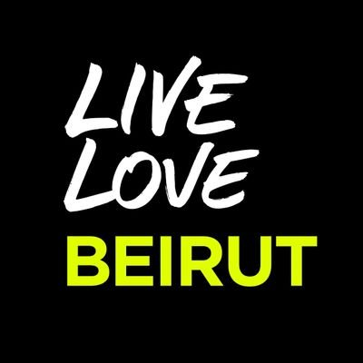
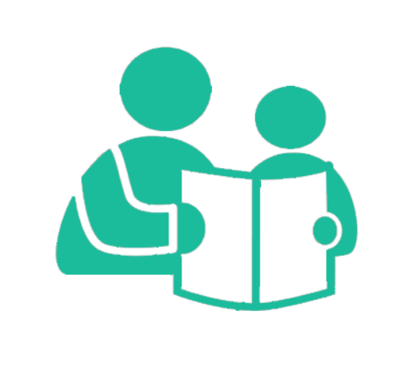
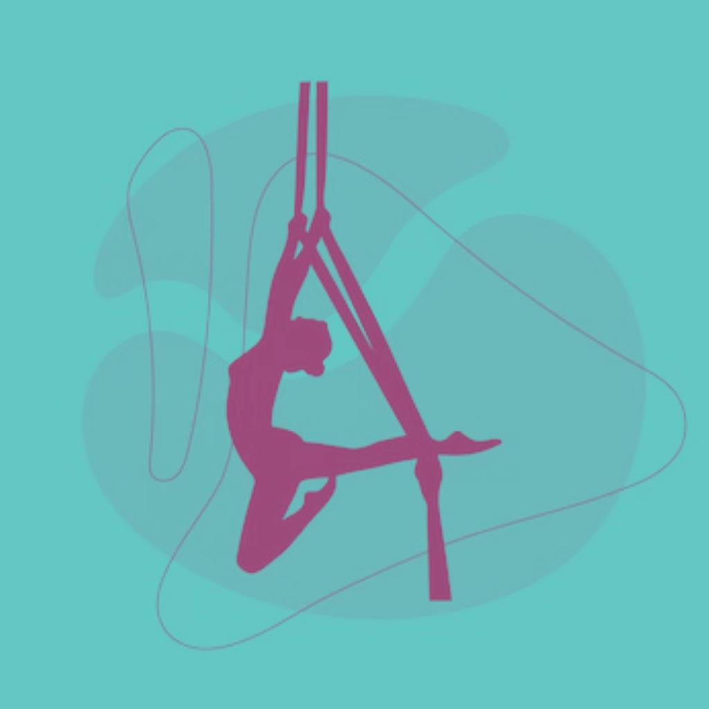
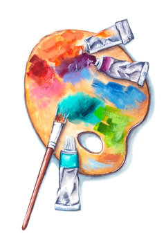
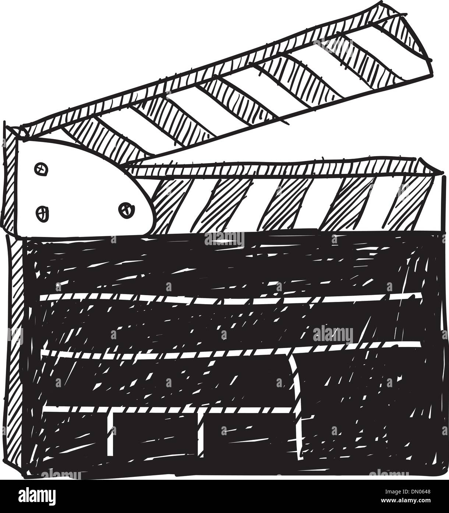

JOY ANDRAOS
Computer Scientist
CONTACT INFO
- +961 71577031
- joy.andy3@gmail.com
- Beirut, Lebanon
FIND ME ON
- Linked in: click here!
- Github: click here!
- Youtube: click here!
LANGUAGES
- English: bilingual proficiency
- French: native proficiency
- Arabic: full professional proficiency
SKILLS
- MS Word
- MS Excel
- MS Powerpoint
- Java developer
- Python developer
- HTML5
- CSS3
- Javascript
ABOUT ME
“The world always seems brighter when you’ve just made something that wasn’t there before” – Neil Gaiman. I’ve always been curious to know how the world around me works, especially since I grew up in a very advanced technological era. Additionally, I love solving problems. For that reason, I decided to pursue a career in computer science. I’m currently in my second year of my bachelor degree and I’m keen on pursuing a career in full stack web development.
Hover over the icons with the mouse to read more about my career and experiences
EDUCATION

BS in Computer Science | 2021-present
Minor in Audiovisual Production
Active member of the Google Developer's club

2006-2021
High School Diploma
General Science
VOLUNTEERING

Social Services: I participated in an event to distribute Christmas gifts and clothes to children in need after the explosion of the 4th of August 2020

Member of the NDN missionary team (religious org)
During camps, I'm in charge of leading a team of children, cooking and logistics
EXTRACURRICULAR ACTIVITIES

I gave private tutoring lessons on all subjects to a grade 6 student in 2022
HOBBIES
I'm really passionate about music and playing it
I've been playing the piano for 10 years now
I've also been playing the ukulele for 3 years now

I’ve been dancing since I was 7 years old. I practiced ballet, jazz, zumba, oriental and I’m currently focusing on aerial dance where I found my heart
I love capturing the beauty of the world around me
My VSCO account: @dreamofaninsomniac
I also uploaded a montage about Lebanon on YouTube.

I enjoy painting and drawing from time to time. This therapeutic art helps me escape reality and bring to life my own imagination.

I've always admired the art of film. I took classes in audiovisual production during high school where I directed a stopmotion and a shortfilm among many projects.